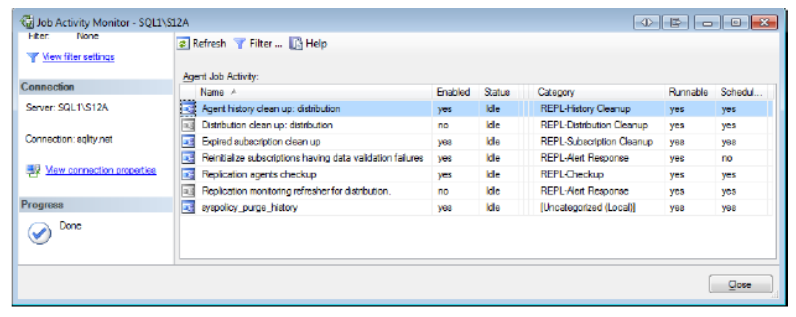

Overview
- In a standard replication setup, SQL Server creates a number of SQL Server Agent jobs to support the replication process.
- By default, SQL Server creates one job per agent in order to run it.
- SQL Server creates several other jobs to perform various maintenance tasks related to replication. Those jobs are mainly tasked with cleanup and problem detection.
Snapshot Agent Job
<Server>-<Publication Database>-<Publication>-<number>
- Category: REPL-Snapshot
- It copies all the schema information and all the data of the published objects into the snapshot folder.
- SQL Server creates a SQL Server Agent job for each publication in order to execute the Snapshot Agent.
- If you need to generate a new snapshot for a publication, you can manually run the Snapshot Agent job associated with that publication, or you can schedule the job to run at a later time.
Log Reader Agent Job
<Publisher>-<Publication Database>-<number>
- Responsible to read the log file of the published database and copy all the data necessary to reproduce the object or data changes in the subscription database. It stores that information in the distribution database.
- When you set up the first publication in a publication database, SQL Server creates a single SQL Server Agent job to execute the Log Reader Agent.
- Any subsequent publications set up in that publication database will also use this job.
- By default, the job is scheduled to start when the SQL Server service starts. Given how SQL Server reuses log space, this is the preferred setting.
Distribution Agent Job
- Category: REPL-Distribution
- SQL Server creates a job for each subscription in order to execute the Distribution Agent.
- The job runs either on the Distributor (Push) or on the Subscriber (Pull).
- Push Subscription
<Publisher>-<Publication Database>-<Publication>-<Subscriber>-<number>
<Publisher>-<Publication Database>-<Publication>-<Subscriber>-<Subscription Database>-<GUID>
Merge Agent Job
- SQL Server creates a SQL Server Agent job for each subscription to execute the Merge Agent.
- The job runs either on the Distributor (Push) or on the Subscriber (Pull).
- Push Subscription
<Publisher>-<Publication Database>-<Publication>-<Subscriber>-<number>
<Publisher>-<Publication Database>-<Publication>-<Subscriber>-<Subscription Database>-<number>
Job Creation

- SQL Server creates the replication-related jobs automatically at various steps during replication setup. When you configure a SQL Server instance to be a Distributor, replication setup creates several SQL Server Agent jobs. Six SQL Server Agent jobs have been created on the Distributor:
- Agent history clean up: <distribution database name>
- Distribution clean up: <distribution database name>
- Expired subscription clean up
- Reinitialize subscriptions having data validation failures
- Replication agents Checkup
- Replication monitoring refresher for <distribution database name>
- When configuring a Push Subscription, SQL Server creates a single SQL Server Agent job on the Distributor. The job runs the Distribution Agent. There are no additional jobs on either the Publisher or the Subscriber. In the Push Subscription model all three replication agents live on the Distributor.
- When you configure a Pull Subscription, SQL Server creates only a single SQL Server Agent job to run the Distribution Agent on the Subscriber.
- You can tell which SQL Server Agent job runs which replication agent by referring to the Category column in the Job Activity Monitor.
From the distribution database, it removes all history records that keep track of the agents' performance. The job uses the history retention setting of the distribution database to determine which records to delete. SQL Server creates one job of this type for each distribution database on the Distributor.
Removes old transaction information from the distribution database. It also checks whether all Subscribers received each record. Based on the result of that check and the replication retention settings, the job then determines which records to delete from the distribution database. In addition, this disables subscriptions that failed to read the transaction information in time. It also regularly refreshes the statistics on the tables in the distribution database. SQL Server creates one job of this type for each distribution database on the Distributor.
Removes subscriptions that fail to connect to the Subscriber within the publication retention period. This job runs on the Distributor as well as on the Publisher. SQL Server creates one instance of this job on each server.
Identifies subscriptions with data validation errors and sets them up for re-initialization. You can use data validation to verify data consistency between the Publisher and Subscriber.
Monitors the replication agents and creates an entry in the Windows Event Log if any replication agent fails to report its status in the distribution database.
Used by the replication monitor to refresh cached queries.